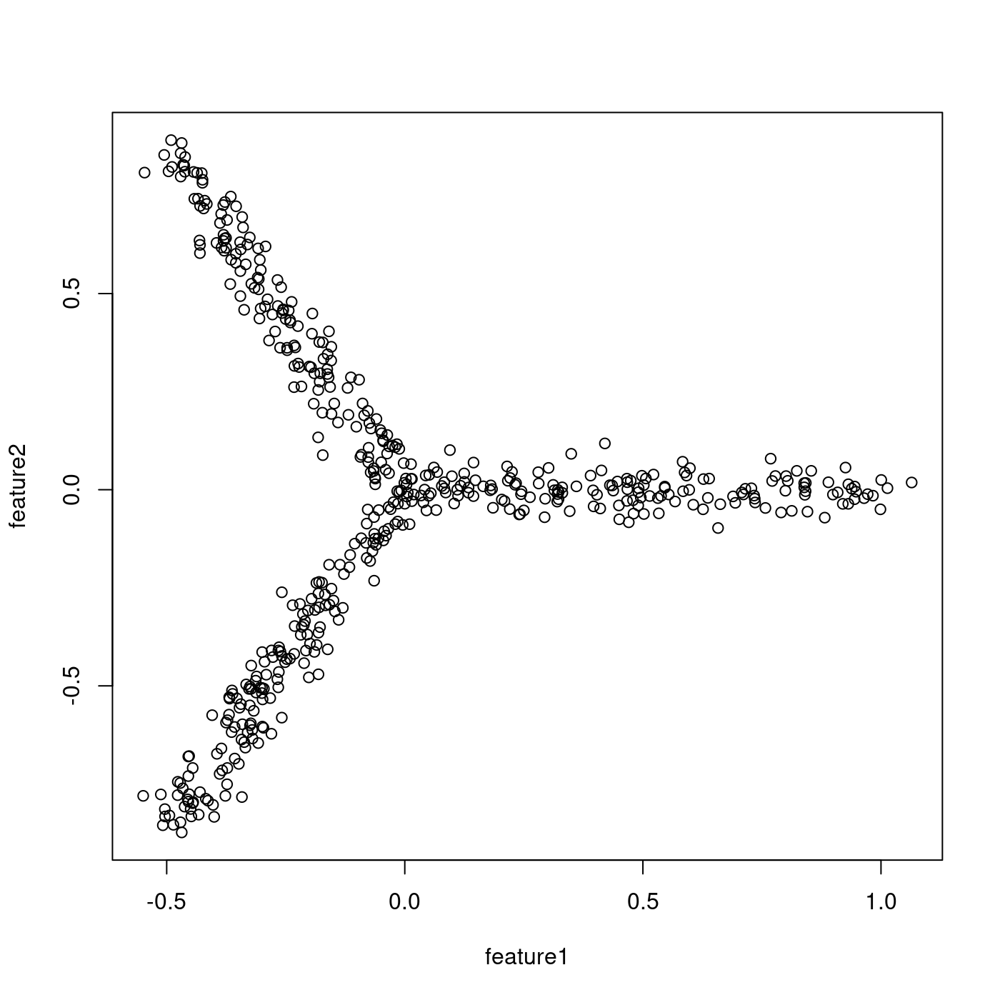
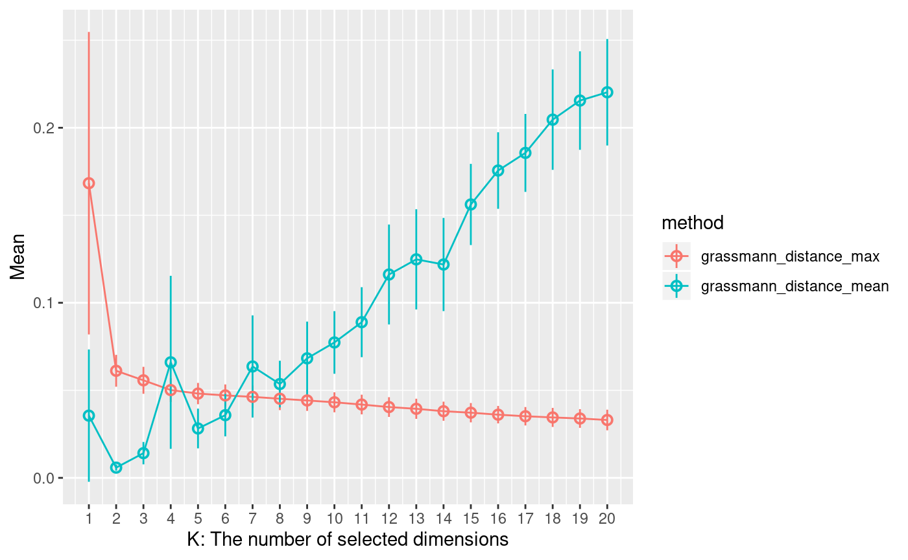
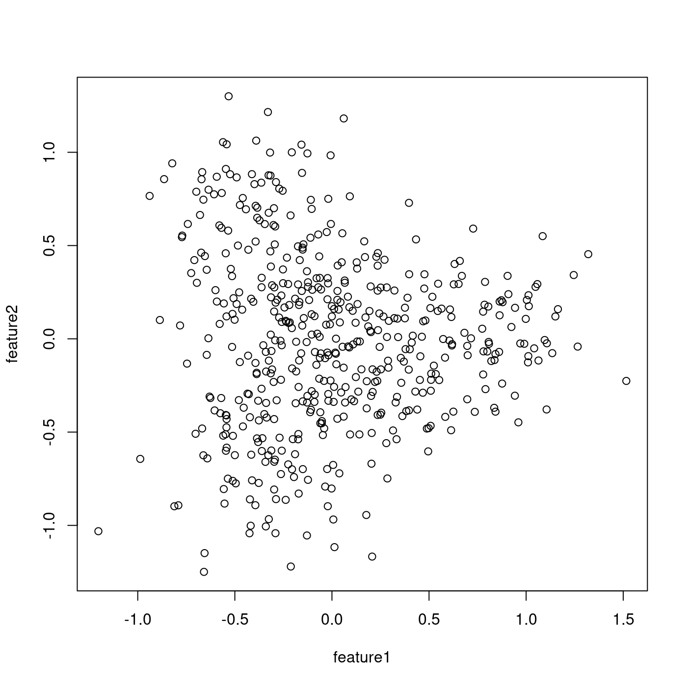
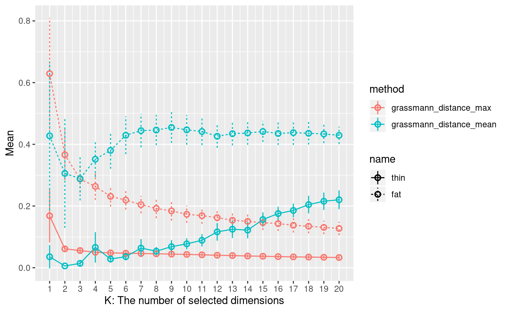

This document introduces how to use Treefit with toy data.
Treefit provides some toy data generators. For example, treefit::generate_n_wands_2d_tree_expression() generates N wands tree data.
The generated data have 2 features (genes). Rows are samples (cells) and columns are features (genes). Values are expression data, not count data.
The generator has the fatness parameter. You can generate no noise tree data with 0.0 fatness. You can generate noisy tree data with 1.0 fatness.
Here is an example that generates 3 wands tree data that has 500 samples and a bit noisy samples:

You can estimate quantitative tree-likeness of the tree data by treefit::estimate():
## k method mean standard_deviation
## 1 1 grassmann_distance_max 0.16832327 0.086407689
## 2 1 grassmann_distance_mean 0.03553236 0.037791334
## 3 2 grassmann_distance_max 0.06115393 0.009103940
## 4 2 grassmann_distance_mean 0.00583015 0.001786896
## 5 3 grassmann_distance_max 0.05571085 0.007703458
## 6 3 grassmann_distance_mean 0.01409808 0.006403567The estimated result is a data.frame. The following points should be focused:
mean and standard_deviation column values when method column value is "grassman_distance_max" (Grassmann distance max case)k, mean and standard_deviation column values when method column value is "grassman_distance_mean" (Grassmann distance mean case)In the Grassmann distance max case, the smaller values in the mean and standadard_deviation columns, the more tree-like the input data is.
In the Grassmann distance mean case, the k column value will relate to the number of the major cell lines when the mean column value is the smallest. The number of the major cell lines will be k + 1 of the case. For example, the k column value is 2 when the mean column value is the smallest, 3 = k(2) + 1 will be the number of the major cell lines.
You can confirm the above points by visualizing the estimated result. You can visualize by treefit::plot_estimated():

X-axis shows the k column values. Y-axis shows the mean column values. The standard_deviation column values are showed as error bar. The shorter error bar shows smaller the standard_deviation column value.
In the Grassmann distance max case, the values of the mean and standard_deviation columns are almost 0. It means that the input data will be very tree-like. It’s true because you generate a tree data that has a bit noise samples.
In the Grassmann distance mean case, the k value is 2 when the mean column value is the smallest. It means that the number of the major cell lines will be 3 = 2 + 1. It’s true because you generated a 3 wands tree data.
Let’s generate not tree-like date too.
Here is an example that generates 3 wands tree data that has 500 samples and much noisy samples:

You can estimate quantitative tree-likeness of the tree data by treefit::estimate():
## k method mean standard_deviation
## 1 1 grassmann_distance_max 0.6292474 0.18082231
## 2 1 grassmann_distance_mean 0.4274812 0.24125512
## 3 2 grassmann_distance_max 0.3661393 0.08237105
## 4 2 grassmann_distance_mean 0.3057792 0.17673947
## 5 3 grassmann_distance_max 0.2874744 0.04405179
## 6 3 grassmann_distance_mean 0.2887913 0.07056178You can visualize these estimated results at once by adding name column:
treefit::plot_estimated(merge(cbind(estimated_thin, name="thin"),
cbind(estimated_fat, name="fat"),
all=TRUE))
In the Grassmann distance max case, the former tree data has smaller mean column values than the latter tree data. It means that the former tree data will be more tree-like than the latter tree date.